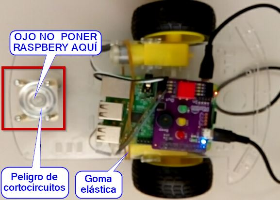

Salidas
La ventaja de Pibrella es que podemos conectar diréctamente un pequeño motor, led, servo... son salidas tipo interruptor, que conecta con alimentación de 5V o no conecta con alimentación 0V y cada salida tiene sus dos terminales, no comparten masa.
Las instrucciones son sencillas:
- Para encender la salida E: Enviar el mensaje OutputEon
- Para apagar la salida E: Enviar mensaje OutputEoff
Os dejamos a vuestra imaginación cuales serían los mensajes para las otras 3 salidas F, G y H.
Vamos a utilizarlo para mover un pequeño coche, así damos movimiento a nuestra pibrella.
La desventaja es que no puede invertir la polaridad, luego no podemos mover nuestro coche hacia atrás.
Por menos de 7€ se puede conseguir un sencillo chásis (no hace falta el soporte pilas)
Vamos a realizar un pequeño "coche teledirigido"
¿Te atreves?
El archivo lo tienes en https://github.com/JavierQuintana/pibrella como coche1
Primero conectamos cada motor en una de los conectores salida de la Pibrella, nosotros lo vamos a conectar en el E y en el H:
Ponemos la raspberry en el chasis con una goma elástica y encedemos cuidado, no encima de la rueda loca pues provocarías cortocircuitos con los tornillos y la placa raspberry !!!

Y el programa es sencillo:
¡¡Acuerdate de activiar GPIOServer !!!
Algunos se quejan de que no es "independiente" por culpa de los cables de alimentación. SOLUCIÓN: Pon dos baterías externás de USB típicas que se usan para los móviles